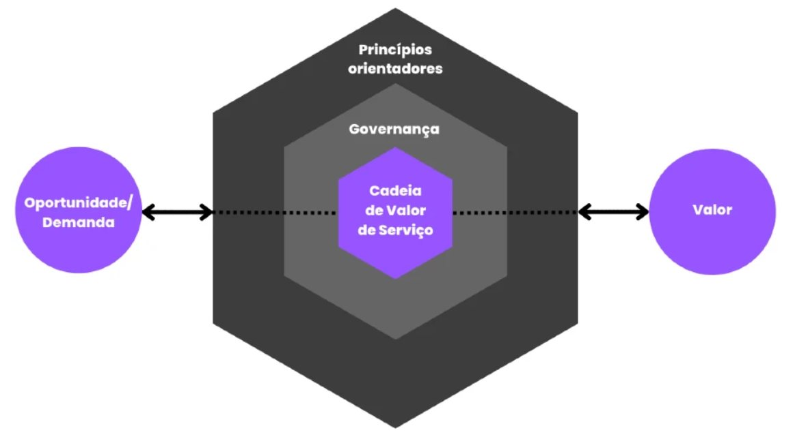

Governança de TI
Itens do Edital:
g) Governança de TI: ITIL versão 4 (ITIL 4): Operação de Serviços (Gerenciamento de Eventos, Gerenciamento de Incidentes, Gerenciamento de Problemas, Cumprimento de Requisições, Gerenciamento de Acessos), Desenho de Serviços (Gerenciamento de Níveis de Serviço, Gerenciamento de Capacidade, Gerenciamento de Disponibilidade, Gerenciamento de Continuidade de Serviços de TI, Gerenciamento de Continuidade de Negócio), Transição de Serviços (Gerenciamento de Configuração e Ativos de Serviços de TI, Gerenciamento de Liberação e Implantação, Gerenciamento de Mudanças), Melhoria Contínua de Serviços, Métricas (Fatores Críticos de Sucesso - CSFs, Índices Chave de Performance - KPIs).
O que é o Sistema ITIL
O Sistema ITIL é um conjunto de boas práticas de gerenciamento de serviços de tecnologia de informação. Ele está de acordo com a norma ISO/IEC 20000, primeira padronização da International Organization for Standardization (ISO) voltada exclusivamente para a gestão de TI.
ITIL é a sigla para Information Technology Infrastructure Library – que pode ser traduzido para “biblioteca de infraestrutura de tecnologia da informação”.
O sistema foi desenvolvido pela Agência Central de Computação e Telecomunicações (CCTA, na sigla em inglês) do Reino Unido na década de 1980, com o objetivo de estabelecer um padrão de segurança e confiabilidade na gestão de processos de TI, garantindo assim uma boa experiência para os usuários.
Para isso, o modelo descreve boas práticas de infraestrutura, manutenção e operações. As orientações estão alinhadas aos métodos ágeis, ao DevOps e ao Lean, bastante utilizados por times de tecnologia.
Desde que o ITIL foi proposto pela CCTA, o sistema passou por quatro grandes atualizações:
ITIL v1
A primeira versão do ITIL era voltada para as agências governamentais, que começavam a se informatizar na década de 1980. Era, literalmente, uma biblioteca: uma coleção de livros físicos que chegou a mais de 30 volumes em 1996.
ITIL v2
Nos anos 2000 foi lançada a segunda versão do ITIL. Os 30 volumes foram condensados em 9, mas ainda eram voltados para entidades do governo britânico.
ITIL v3
Com a popularização do modelo em empresas e demais entidades privadas, foi lançada uma nova atualização em maio de 2007.
O ITIL v3 era descrito em 5 livros, que reuniam 26 processos e 4 funções. A maior inovação foi o conceito do Ciclo de Vida de Serviço (CVS), que era composto por dois componentes básicos:
Núcleo do ITIL: conjunto de melhores práticas que podem ser adotadas por todas as organizações que prestam serviços ao negócio;
Guias complementares do ITIL: boas práticas complementares reunidas em publicações específicas para diferentes setores da indústria, modelos operacionais e arquiteturas de TI.
Em 2011, oITIL v3 ganhou uma grande atualização para dar clareza a conceitos e adicionar novas práticas ao CVS.
É nesse período também que a CCTA foi incorporada ao Escritório de Comércio Governamental (OGC, na sigla em inglês), entidade do Reino Unido responsável por promover a eficiência nos processos de negócios do Estado.
O sistema ITIL passou a ser atualizado pelo OGC até 2013, quando uma joint venture entre o governo britânico e a empresa Capita, a Axelos, assumiu o framework. Em 2021, a Axelos passou a fazer parte do grupo PeopleCert.
ITIL 4
A quarta e última atualização do ITIL veio em fevereiro de 2019, com a publicação do livro “ITIL Foundations”.
O modelo de gestão de TI foi alterado para atender as necessidades da Era Digital, com foco na criação de valor para os usuários, na condução de estratégias de negócios e na adaptação à transformação digital.
As principais mudanças do ITIL 4
O ITIL 4 foi desenvolvido em conjunto entre a Axelos e a comunidade de profissionais de TI para adaptar o ITIL v3 às mudanças cada vez mais aceleradas da Era Digital.
A principal mudança é a maior flexibilidade na execução dos processos. Na versão anterior, havia um certo engessamento no CVS, que dependia de uma série de estágios para ser executado.
O ITIL 4 propõe o Sistema de Valor de Serviço (SVS) para alterar esse cenário. O SVS é um conjunto de componentes e atividades de uma empresa que possibilita a criação de valor.
A flexibilidade vem da criação de um ecossistema entre organização, fornecedores, stakeholders e clientes. Todos devem atuar juntos para manter o sistema funcionando.
Os componentes do SVS são:
Cadeia de valor de serviço: modelo operacional flexível para a entrega e aprimoramento contínuo de serviços. Tem como atividades principais planejar, melhorar, engajar, desenhar, construir e entregar;
34 práticas que atualizam os processos do ITIL v3;
Governança: conjunto de normas e práticas que são a base para a definição de processos internos, de acordo com as exigências do setor e os valores da organização. Facilita a integração com outros frameworks como o COBIT.
Melhoria contínua.

Outra mudança importante é a inclusão de tecnologias emergentes, como Cloud Computing, Infraestrutura como Serviço (IaaS), Machine Learning e blockchain.
O ITIL 4 também introduziu novos conceitos, que você vai conhecer em detalhes a seguir.
Os princípios do ITIL 4
São 7 princípios que devem orientar os profissionais de TI na adoção do SVS e, assim, adaptar o ITIL à realidade de suas empresas:
Concentrar-se no valor;
Começar por onde você está;
Avançar iterativamente com feedback;
Colaborar e promover a visibilidade;
Pensar e trabalhar pensando no todo;
Manter os processos simples e práticos;
Otimizar e automatizar constantemente.
As 4 dimensões do ITIL 4

As dimensões do ITIL são necessárias para a entrega de valor ao cliente, além de facilitar a visão holística da gestão de serviços. Todas são afetadas por fatores internos e externos à organização.
As 4 dimensões são:
Organizações e pessoas;
Informação e tecnologia;
Parceiros e fornecedores;
Fluxos de valor e processos.
As 34 práticas do ITIL 4
As práticas do ITIL 4 são “um conjunto de recursos necessários para realizar o trabalho ou cumprir um objetivo”. Elas têm como objetivo dar uma visão holística do sistema de serviços, ao considerar elementos como cultura, tecnologia, informações e gerenciamento de dados.
A palavra “prática” também evita as ambiguidades do termo “processos”, que é usado no dia a dia das empresas em todos os departamentos. Hoje, o ITIL considera um processo como “um conjunto de atividades que transformam entradas em saídas”.
As práticas são divididas em 3 grandes grupos:
1. Práticas gerais de gestão
Gerenciamento da estratégia
Gerenciamento da segurança da informação
Gerenciamento de fornecedor
Gerenciamento de mudança organizacional
Gerenciamento de projetos
Gerenciamento de relacionamento
Gerenciamento de riscos
Gerenciamento de talento e força de trabalho
Gerenciamento do conhecimento
Gerenciamento do portfólio
Gerenciamento financeiro dos serviços
Gestão da arquitetura
Medição e reporte
Melhoria contínua
2. Práticas de gestão de serviço
Análise de negócio
Central de serviço
Desenho de serviço
Gerenciamento de ativos de TI
Gerenciamento de capacidade e desempenho
Gerenciamento do catálogo de serviços
Gerenciamento de configuração de serviço
Gerenciamento de continuidade de serviço
Gerenciamento de disponibilidade
Gerenciamento de incidente
Gerenciamento de liberação
Gerenciamento de nível de serviço
Gerenciamento de problema
Gerenciamento de requisição de serviço
Habilitação de mudança
Monitoramento e gerenciamento de evento
Validação e teste de serviço
3. Práticas de gestão técnica
Desenvolvimento e gerenciamento de software
Gerenciamento de implantação
Gerenciamento de infraestrutura e plataforma
Nenhuma prática está vinculada a um elemento do SVS nem é pré-requisito para a adoção de outras práticas. Não é obrigatório usar todas as 34 simultaneamente.